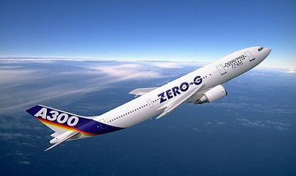

FLUGZEUGTYPEN
Airbus, Boeing,... Typen die man kennen sollte:
Airbus A380
Der Airbus A380 ist das bislang größte Flugzeug in der Geschichte der zivilen Luftfahrt. Das vierstrahlige Flugzeug mit einer Spannweite von 79,8 Metern kann 15.400 Kilometer ohne Zwischenlandung zurücklegen - also nonstop Verbindungen zwischen den wichtigsten Drehkreuzen in Europa, Nordamerika und Asien bewältigen.
Airbus A340
Die Airbus A340-600 ist ein vierstrahliges Langstrecken Großraum-Verkehrsflugzeug für maximal 440 Passagiere. Der Airbus A340-600 ist eine Weiterentwicklung des Airbus A340-200 bzw. A340-300. Der Rumpf wurde um 11,7 Meter (38ft 5in) und die Tragflächen um 3,15 Meter (10ft 4in) im Vergleich zum A340-300 verlängert. Es war bis zur Vorstellung der Boeing 747-8 das längste Verkehrsflugzeug der Welt.
Airbus A320
Die Airbus A320 ist ein zweistrahliges Kurz- und Mittelstrecken Standardrumpf-Verkehrsflugzeug für maximal 180 Passagiere. Die A320 ist die Ursprungsversion der A320-Familie. Der Airbus A320 war weltweit das erste Serienflugzeug mit Fly-by-Wire Steuerung und Side-Sticks statt Steuerhörner. Als Antrieb stehen die Triebwerke CFM International CFM56-5 und International Aero Engines (IAE) V2500 zur Verfügung. Von der ersten Variante A320-100 wurden lediglich 21 Stück hergestellt. Die Version -100 verfügte noch nicht über Winglets, die sogenannten fenced Wingtips und hatte eine geringere Treibstoffkapazität.
Airbus A300 zero G
Der Airbus A300 war das erste zweistrahlige Großraumflugzeug der Welt, produziert von Airbus. Die Maschine hat zwei Triebwerke und Platz für 226 Passagiere. Bis 1977 verkauft Airbus 33 Maschinen. Doch Ende der 1970er-Jahre bekommt der Euro-Vogel Auftrieb. Der A300 entpuppt sich als wirtschaftlich und zuverlässig, zudem ist er dank kräftiger EU-Subventionen günstiger als mancher Konkurrent. Später wurde es dann als Parabelflugzeug verwendet darum der Name Zero G für Null Gravitation.
Boeing 747
Die Boeing 747, auch Jumbo-Jet genannt, ist ein vierstrahliges Großraumflugzeug des amerikanischen Flugzeughersteller Boeing. Es war über mehrere Jahrzente hinweg das größte Passagierflugzeug. Charakteristisch ist ihr "Buckel" (Oberdeck) in dem sich unter anderem das Cockpit befindet.